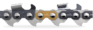

Teste eine von 333 kostenlosen
Husqvarna X-Cut Ketten der neuesten Generation
– und wenn du nach dem Testen deine Erfahrungen mit uns teilst, nimmst du an der
Verlosung einer Husqvarna 550XPG Motorsäge teil!
Sägen in einer neuen Dimension.

X-CUTS85
- Schnittleistung
- Ausdauer-Performance
- Verschleißresistenz
- 3/8 Halbmeißel 1,5 mm
- Die Alternative zur Vollmeißelkette für den professionellen Forstarwender bei rauen Bedingungen
- Insbesondere für Motorsägen mit 60-90 cm3 Leistung
- Ideal für: Fallschnittarbeiten
- Unempfindlicher bei Verunreinigungen Harz, feuchtem Holz
X-CUTS35G
- Schnittleistung
- Ausdauer-Performance
- Verschleißresistenz
- 3/8 Halbmeißel 1,5 mm
- Die Alternative zur Vollmeißelkette für den professionellen Forstarwender bei rauen Bedingungen
- Insbesondere für Motorsägen mit 60-90 cm3 Leistung
- Ideal für: Fallschnittarbeiten
- Unempfindlicher bei Verunreinigungen Harz, feuchtem Holz